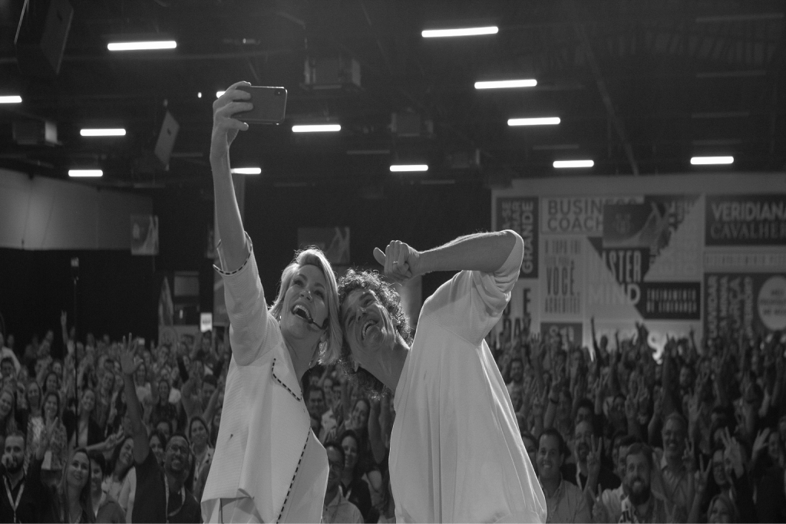

O lado humano do negócio.
Sua estratégia ganha força nas pessoas que a colocam em prática.

A VIRTÙ
A Virtù conecta desenvolvimento de lideranças, cultura organizacional e gestão de pessoas aos desafios de crescimento da sua empresa.
Reunimos conhecimento, método e ferramentas para ajudar líderes e equipes a transformar aprendizado em decisões, comportamentos e práticas de gestão.
Por trás de cada entrega,existem pessoas queprecisam de direção.
Uma estratégia depende de quem toma decisões, organiza prioridades, conduz conversas e acompanha o trabalho. Quando essas pessoas não têm clareza sobre seu papel, a distância entre o que a empresa planeja e o que acontece na rotina aumenta.
É nesse encontro entre pessoas e negócio que a Virtù atua. Trabalhamos com o desenvolvimento de lideranças e com a estruturação da gestão de pessoas, considerando a cultura, as expectativas e o momento de cada organização.
Isso significa olhar tanto para as habilidades de quem lidera quanto para as condições em que a equipe trabalha. Como as responsabilidades são definidas? Como os valores aparecem nas decisões? Como as pessoas recebem orientação, reconhecimento e oportunidades de desenvolvimento?
Essas perguntas ajudam a conectar o trabalho de desenvolvimento às necessidades reais da empresa.
Pessoas, cultura e gestãoprecisam funcionar juntas.
01
Cultura que orienta escolhas
Os valores da empresa precisam ajudar as pessoas a decidir como agir. Trabalhamos a conexão entre esses princípios, os comportamentos esperados e as práticas que a organização reforça no cotidiano.
02
Lideranças que desenvolvem pessoas
Liderar envolve dar direção, conversar com clareza, acompanhar entregas e preparar a equipe para assumir responsabilidades. Nossas jornadas abordam essas habilidades a partir dos desafios de quem está à frente de pessoas.
03
Gestão que dá clareza ao trabalho
Responsabilidades, expectativas, processos e rituais ajudam a equipe a compreender o que precisa fazer e como seu trabalho contribui para o negócio. Conforme a jornada, apoiamos a organização dessas práticas com as lideranças.
04
Comportamento quesustenta as relações
Autoconhecimento, inteligência emocional e comunicação participam da forma como as pessoas enfrentam pressão, resolvem diferenças e trabalham juntas. Desenvolver essas habilidades amplia o repertório para lidar com as situações da rotina.
O que nos move e aonde queremos chegar.
01
Nossa missão
Ativar o potencial das pessoas construindo ambientes e negócios altamente positivos e lucrativos.
02
Nossa visão
Ser referência nacional em educação corporativa, levando pessoas, times e negócios mais longe.
A forma de trabalhar tambémexpressa aquilo em que acreditamos.
01
Resultado sustenta,propósito impulsiona
O propósito orienta a direção. Os resultados ajudam a avaliar quanto desse propósito se tornou prática. Por isso, olhamos para as entregas e para o que elas representam no contexto de cada trabalho.
02
Praticamos o que ensinamos
A coerência entre discurso e atitude faz parte da nossa responsabilidade. O que defendemos sobre liderança, relações e compromisso precisa aparecer na maneira como conduzimos nosso próprio trabalho.
03
Velocidade brutal
Agir no tempo certo, com atenção à qualidade. Valorizamos a capacidade de reconhecer o que precisa ser feito, tomar decisões e colocar o trabalho em movimento.
04
Compromisso radical
Assumir uma entrega significa se responsabilizar por ela até o fim. Construímos confiança no cumprimento dos acordos e no cuidado com cada etapa do trabalho.
Diferentes formas de trabalhar o próximo passo da sua empresa.
O formato acompanha a necessidade. Um evento pode abrir uma conversa importante. Uma jornada de aprendizagem permite aprofundar habilidades. Uma mentoria ou consultoria pode trabalhar decisões e processos com quem conduz a organização.
ENCONTRE A JORNADA PARA SUA EMPRESA
↗


O que precisa evoluir para sua empresa dar o próximo passo?
Pode ser a forma de liderar, a clareza das responsabilidades ou a maneira como a cultura aparece no dia a dia. Conte para a Virtù o que você está vivendo e o que deseja desenvolver.
Vamos entender seu contexto e identificar uma jornada que faça sentido para a sua organização.
CONVERSE COM A VIRTÙ
↗